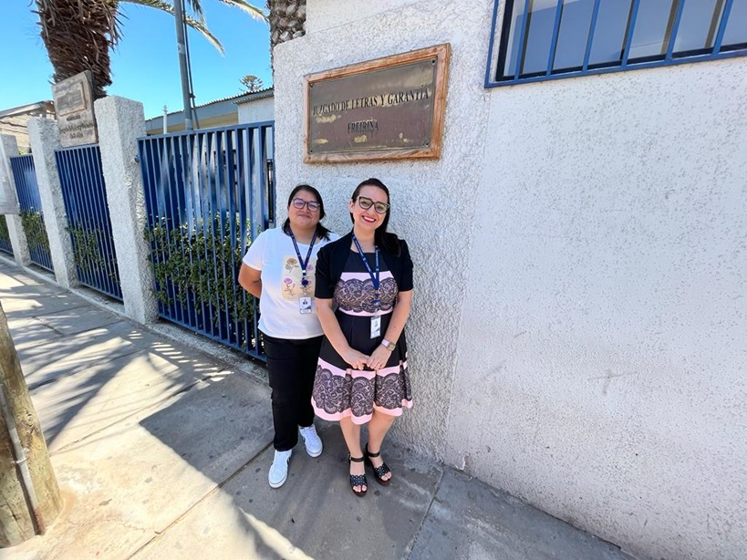

- 25-01-2023
- Informática, Monitoras
- Corporación Administrativa
Visita de Monitoras
El día de hoy monitoras informáticas de la Zonal Copiapó concurren al Juzgado de Letras y Garantía de Frerina con el motivo de resolver dudas y consultas de lo funcionarios sobre los nuevos procesos que se están desarrollando en las diversas plataformas que estas disponibles. 
Visita de informático
Informático de la zonal concurre al tribunal con el objetivo de resolver dudas, cargar perfiles y retirar equipos que deben ser dados de bajas ya que se han reemplazados por equipos de última tecnología. En la visita se aprovechan de resolver dudas con respecto a licitaciones que se encuentran pendientes.